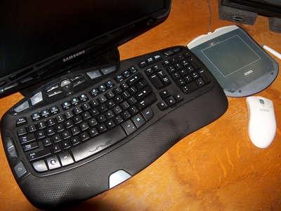
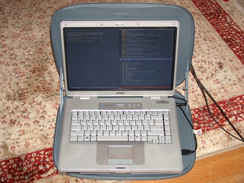
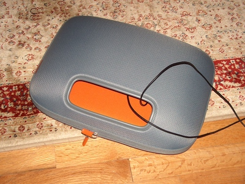
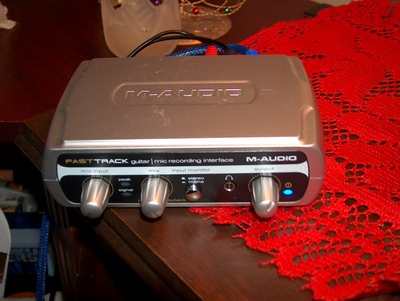
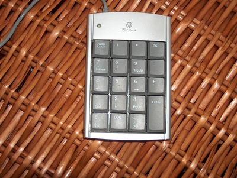
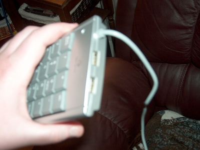

Moving; plus, ergonomic hardware pr0n
I've moved my website to http://dto.mamalala.org ! I apologize for any broken links on the new site—if you can't find something, just look in the page index. Welcome also to Planet Lisp readers who've stumbled upon my (emacs-slanted) blog!
I'd like to have Eon in beta by New Year's, but some shoulder and arm pains have slowed me down. So I picked up a few ergonomic items, and I'll take you on a tour.
The Keyboard

The laptop-like layout of the Logitech Dinovo, which had been my keyboard for the last two years or so, stopped working for me. So I picked up the newer Logitech Wave Cordless Desktop Combo and I've been very happy with it—I'm typing with fewer errors too. Main points:
- It's slightly curved. The heights and angles of the individual keycaps vary slightly so that the fingertips fall into a sort of shallow bowl of keys—a much, much subtler version of the 3-D layouts you see on Maltron keyboards. This is great because I use many machines—I can't afford to ruin myself for other keyboards.
- The bottom row (consisting of the left and right groups of modifier keys, plus the spacebar in the middle) is symmetrical, and the modifier keys are big and fat—at least twice the surface area of a normal key. The control keys are an easy reach for the pinky—much more comfortable. There's one Super key on the left, which i've been thinking about using for the window manager; its place on the right side is taken up by a weird blue "Fn" key. There's a matching blue Excel logo on F1, but I tried it and Excel didn't start. Probably because I'm on Debian.
- Adequate space between keycap edges (about 7mm). I have slightly fat fingers, so this helps me avoid hitting multiple keys by mistake.
- The action could be a little more decisive, but it's fine for me because I type relatively firmly anyway.
- The 14CapsLock key has an odd cutaway that prevents you hitting 15CapsLock by mistake when you are trying to hit “A” or left shift. My reaction to this is kind of neutral.
- Big arrow keys, again for my fat fingers
- Up to an 8 degree tilt. I'm using the 4-degree right now.
- Full numeric keypad. There's no other way to do roguelikes.
- Fifteen extra useless keys that I might configure to do something.
You might notice my old USB Wacom tablet beside the keyboard. Still works great.
The Lapdesk
I got a nice "laptop pod" from Belkin. It cushions your legs and raises the laptop's underside so that the vents get adequate airflow. The opening also doubles as a handle for lugging your laptop from room to room, and the lid can store the laptop's power brick.
 
USB Audio
Right now I'm listening to Miles Davis on our home theater setup, driven by the M-Audio Fast Track USB audio box:

This is a nice full-duplex recording box with hardware monitoring, guitar/line/XLR inputs, and good sound quality.
The Roguelike Controller:
For when you want to play First Age Angband but don't have access to a full keyboard, you can get a cheap add-on USB keypad:

It even has a few USB ports on it, for hooking up a mouse or USB light:

That's a wrap for this week…